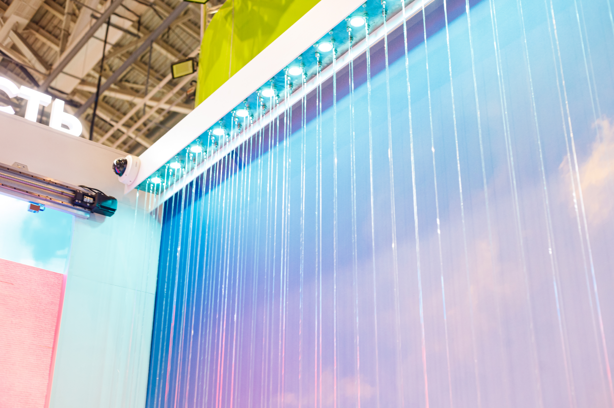
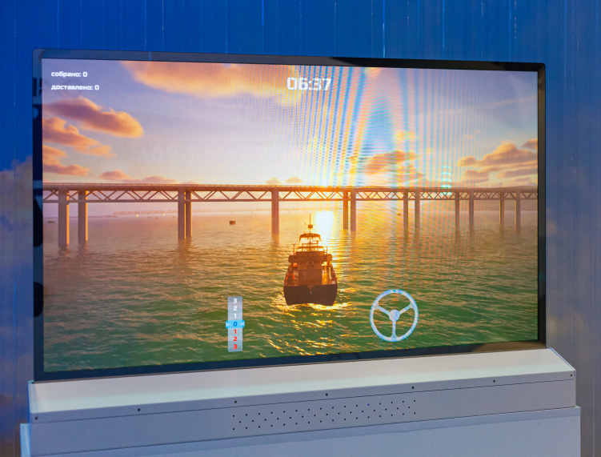

Ноябрь, 2023
Выставка Россия
Павильон Ульяновской области
Город Ульяновск известен своей авиапромышленностью
а так же удивительными природными красотами реки Волги.
Именно эти отличительные черты мы и хотели продемонстрировать
в данном павильоне.
Авиасимулятор
Центральным элементом павильона является почти полноразмерная модель
носовой части самолета ИЛ-76, прозванного в народе “Улыбчивым” за характерный
рисунок своей ливреи. Зайдя внутрь, посетители попадают в настоящую пилотскую
кабину - уникальный авиасимулятор, воссозданный нашими декораторами частично
из оригинальных деталей. Недостающие детали были напечатаны на 3д принтере
по реальным чертежам, и доработаны нашими умельцами до неотличимости
от оригинала.
Почувствуй захватывающее ощущение полета в нашем авиасимуляторе!
Гостю павильона предлагается сесть за штурвал
и самостоятельно поднять самолет в небо! Посетители
выставки высоко оценили этот аттракцион, а павильон
Ульяновской области долгое время был вторым
по посещаемости на выставке.

Водопад
Завораживающий водопад
образует собой одну из стен
павильона, символизируя великую
реку Волгу. Капли воды скатываются
вниз по прозрачным нитям,
создавая иллюзию свободного
падения и при этом оставаясь
безопасным для посетителей.
Прозрачный LED-экран
Перед стеной-водопадом стоит прозрачный LED-экран, предлагающий сыграть в игру, где посетитель может
почувствовать себя капитаном корабля, плывущим по реке Волге.

Иллюминаторы
В противоположную от водопада стену вмонтированы
иллюминаторы самолета, скрывающие за собой экраны,
на которых посетитель может узнать о выдающихся
достижениях Ульяновской области.